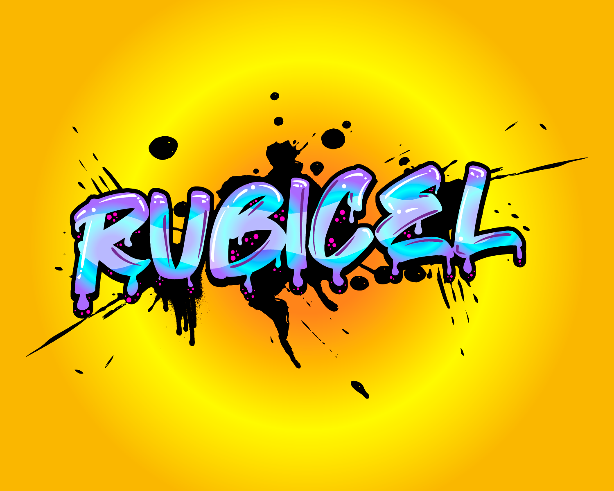
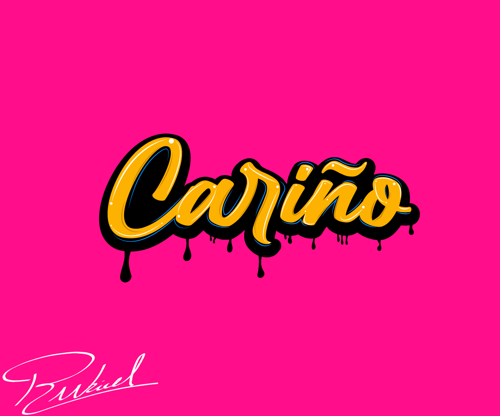
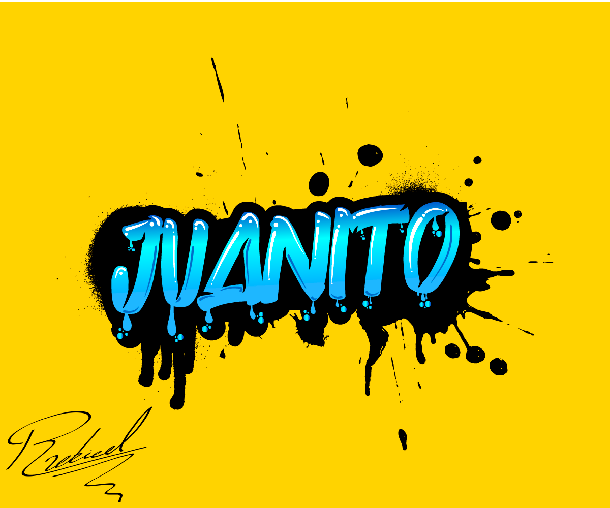
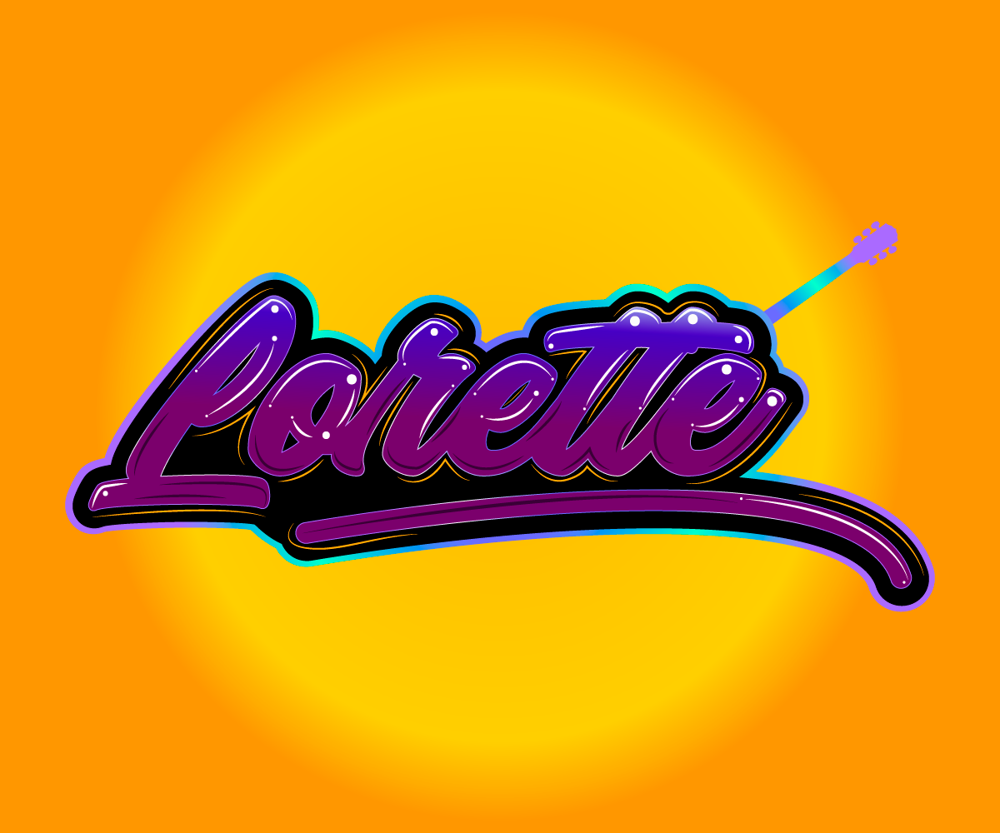
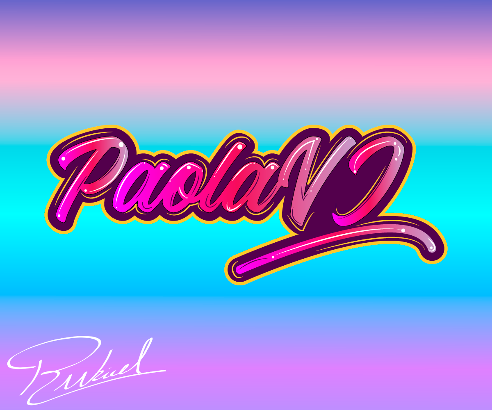
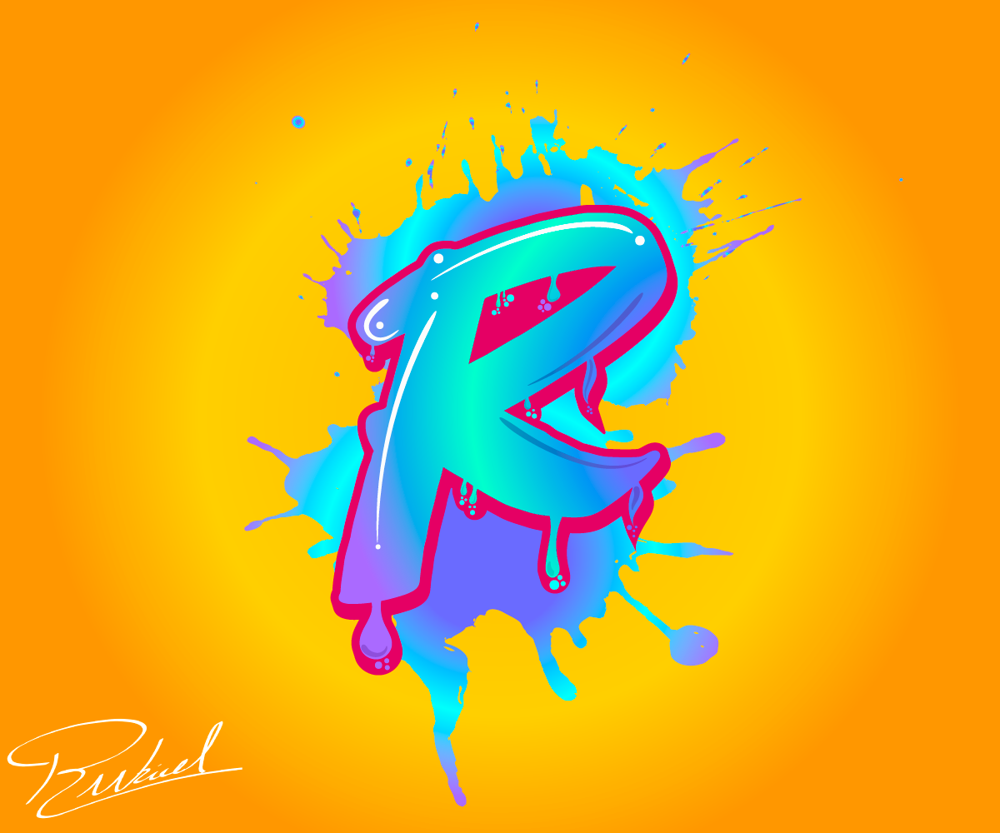
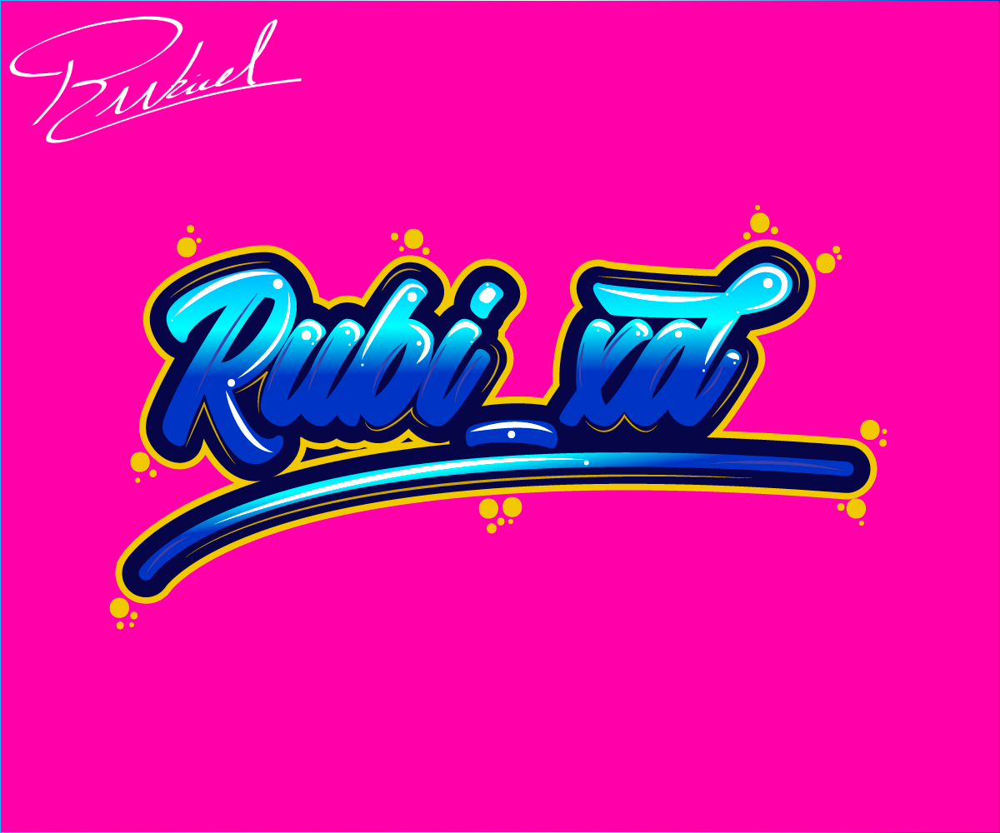
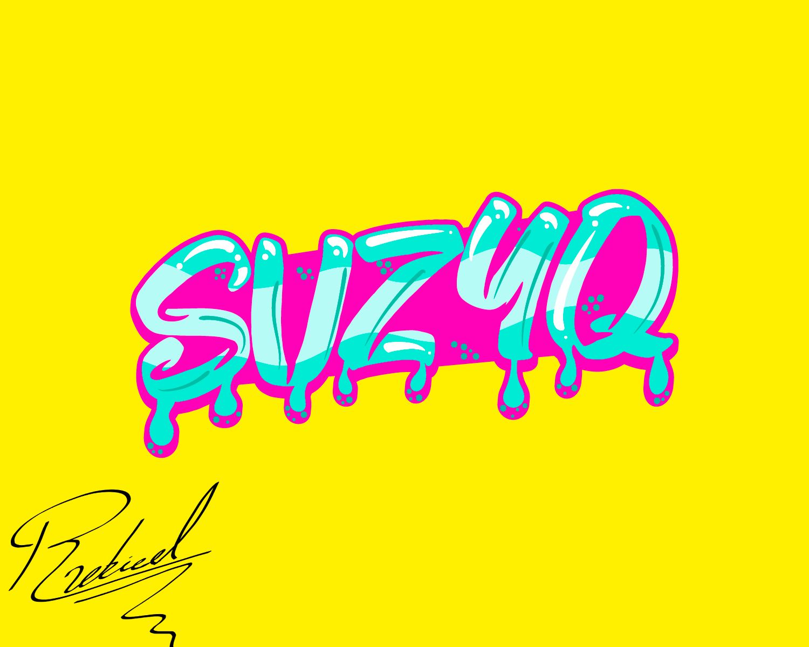
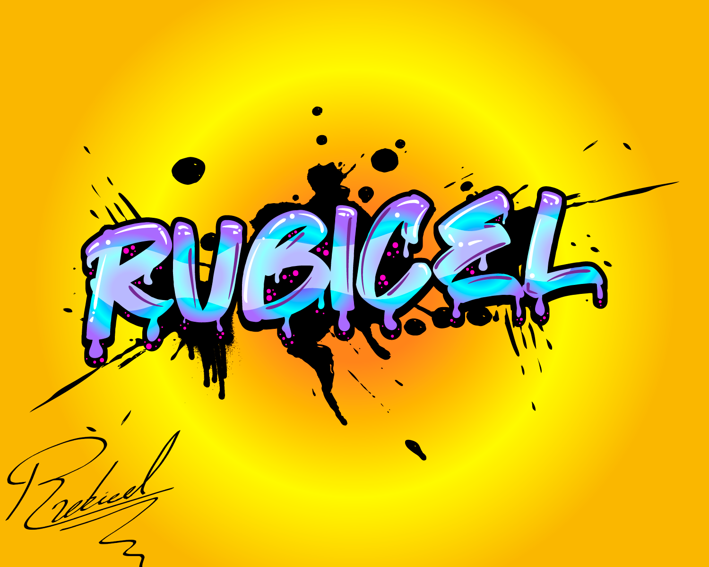
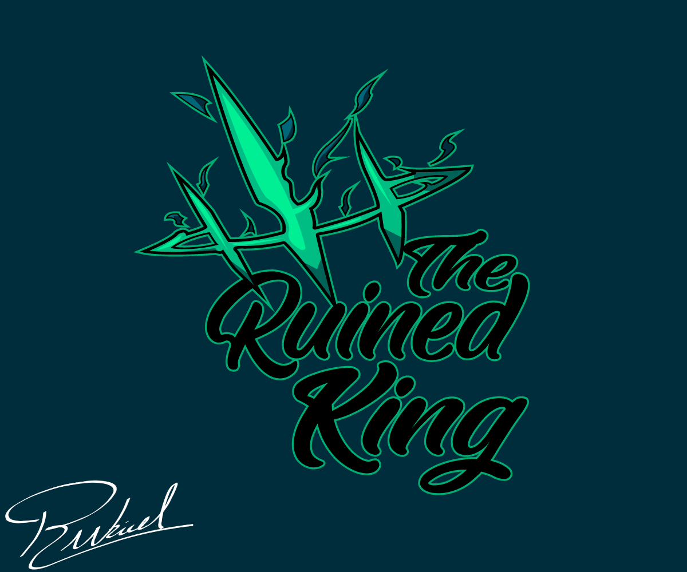

MODELADO 3D
         

Presento todas las tipografías custom que he hecho hasta el momento en el software de Adobe Illustrator, si bien no soy el mejor usando
este software sé como defenderme al usarlo y ahce run par de cosas que hacen que las tipografias tomen un aspecto más personal y vistoso
para el público, al igual se ven dos ilustraciones que hice para aocmpañar a dos de las tipografías que diseñé
En fin, con esto termino mi portafolio de trabajo y siempre que quieran ver más cosas y actualizaciones, las encontrarán en mi instagram.